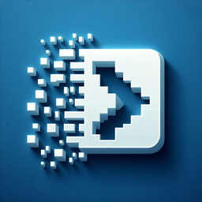
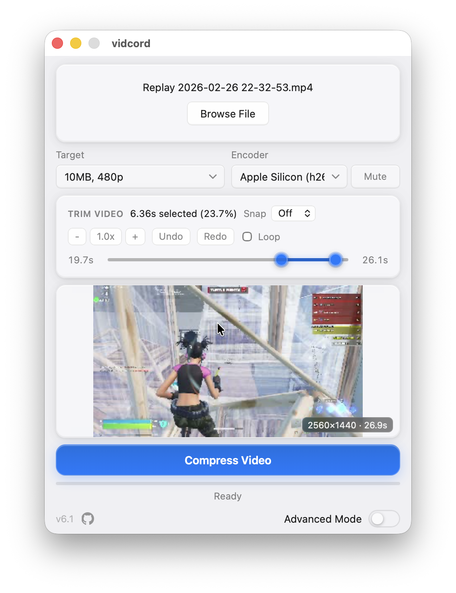
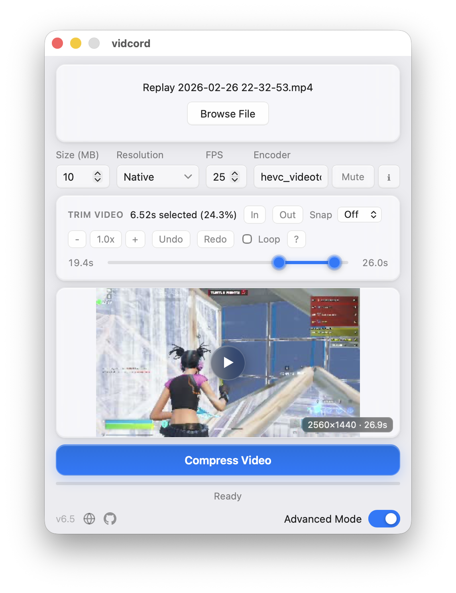
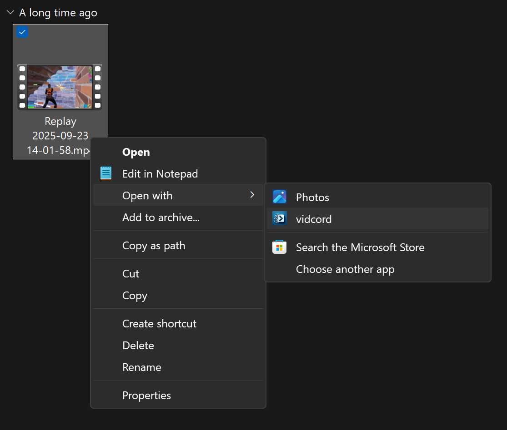
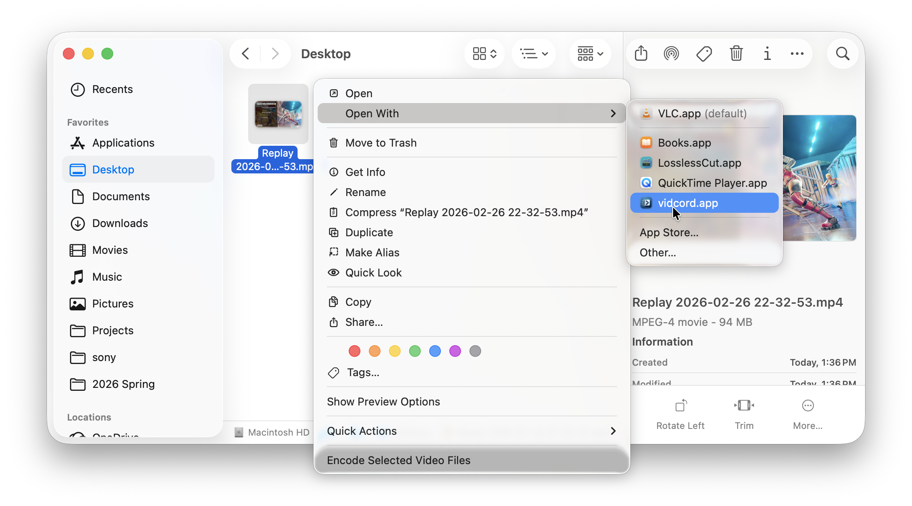

100% local
Your files stay on your device. vidcord never uploads video to a server.

vidcordLocal video compression for Discord limits.
Shrink MP4, MOV, MKV, AVI, WebM, FLV, and WMV files to Discord's 10 / 25 / 50 / 100 / 500 MB upload tiers with FFmpeg on your own machine.
ffmpeg and ffprobe are
installed and available on your PATH.
Detects Windows, macOS, or Linux and selects the latest release asset.
FFmpeg required.
Install ffmpeg and ffprobe before compressing videos.
Full FFmpeg guide

Your files stay on your device. vidcord never uploads video to a server.
Pick 10, 25, 50, 100, or 500 MB and let the app calculate the bitrate.
Cut the part you need, scrub the timeline, then compress only that segment.
Auto-detects NVENC, AMF, QSV, VAAPI, and VideoToolbox when available.
Three steps from large clip to Discord-ready upload.
Drag and drop, browse, or use Open With from Finder or Explorer.
Select a Discord size target, remove audio if needed, and preview the range.
vidcord runs FFmpeg locally, verifies the size, and saves to Downloads.
Advanced mode lets you set a custom target size, resolution, and encoder string. Encoder detection shows what your installed FFmpeg can actually use.

vidcord registers as a video app, so you can start from your file manager and get the compressed MP4 back in Downloads.
Right-click a video and choose vidcord from Open with.

Use Open With in Finder to send a local video straight into vidcord.

Exports land in Downloads with a safe auto-incremented filename.

Short answers for searchers, crawlers, and anyone checking how vidcord works.
No. vidcord runs FFmpeg on your computer, keeps files local, and does not require an account or telemetry.
The presets target 10 MB, 25 MB, 50 MB, 100 MB, and 500 MB uploads. Advanced mode can set a custom target size.
No. Install FFmpeg separately and make sure ffmpeg and
ffprobe are available on your PATH. Start with the
platform setup steps.
The site checks the latest GitHub release, detects Windows, macOS, or Linux in the browser, and links directly to the matching release asset. If x64 or ARM64 cannot be determined with enough certainty, it asks you to choose.
vidcord does not bundle FFmpeg. Install it once, then launch vidcord and it will
detect ffmpeg and ffprobe automatically.
Most Windows 10 and Windows 11 PCs can install FFmpeg from PowerShell:
winget install Gyan.FFmpeg
Restart your PC, or sign out and back in, so PATH includes ffmpeg.exe and
ffprobe.exe. Windows ARM64 users should follow the manual steps in the
full guide.
Install Homebrew if you do not have it, then run this in Terminal:
brew install ffmpeg
After Homebrew finishes, reopen vidcord. It will look for ffmpeg and
ffprobe on your PATH.
Install FFmpeg with your distribution package manager:
sudo apt install ffmpeg
sudo dnf install ffmpeg
sudo pacman -S ffmpeg
Use the command for your distro, then launch vidcord normally. The app uses the system
ffmpeg and ffprobe binaries.
Free, open-source, MIT licensed. Built for Windows, macOS, and Linux.
ffmpeg and ffprobe.
Windows 10 or later, x86_64 and ARM64 builds.
Download for WindowsmacOS 11 or later with one universal Apple Silicon and Intel DMG.
Download for macOSAppImage builds for modern glibc distros on x86_64 and aarch64.
Download for LinuxPlatform detected automatically. Not right? Windows macOS Linux